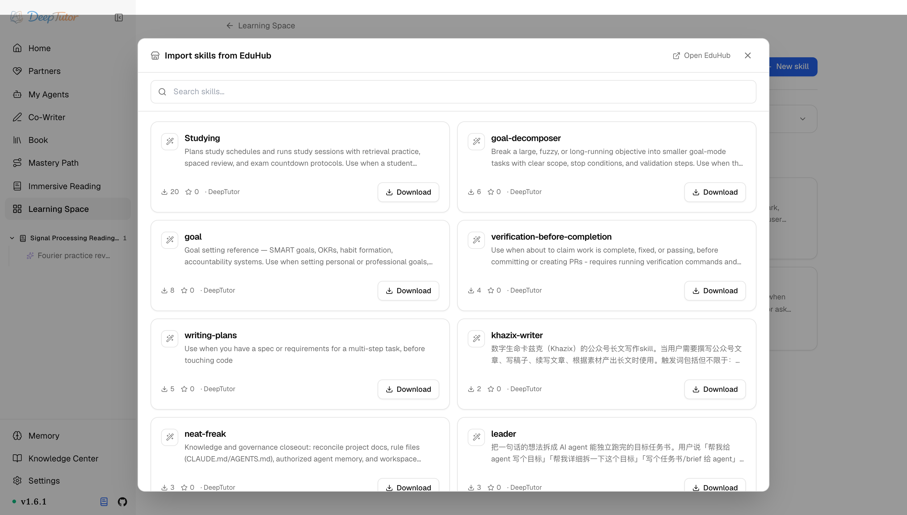

DeepTutor 生態EduHub
社群 Skill 免費基地！DeepTutor EduHub 5 道安全閘門把關，附發布教學！｜零度解說
發現社群 Skill，安裝前檢查內容，透過 DeepTutor 的安全閘門匯入，並發布自己的版本。
原文連結：https://docs.deeptutor.info/zh-cn/ecosystem/eduhub/
最近不少朋友在後台問我：DeepTutor 的 Skill（技能手冊）能不能直接用別人寫好的，別每次都從零開始折騰？
還真有。EduHub 就是 DeepTutor 面向 Skill 的社群分發層，一頭連著本機的 SKILL.md 資料庫，一頭連著共享目錄。
在這裡，學習者可以發現可複用的工作流，作者可以發布帶版本的軟體套件，而 DeepTutor 把安裝放在顯式審閱與安全邊界之後。
不過社群的東西畢竟是別人寫的，怎麼保證裝進來的不是一份帶私貨的壞包？5 道安全閘門就是幹這個的。
接下來我們把發現、安裝、發布三個環節完整走一遍。
從網頁介面發現 Skill
開啟學習空間 → Skills → Import from EduHub。
應用內目錄可以搜尋社群 Skill，檢視說明和版本，開啟對應 EduHub 頁面，並安裝到當前使用者的 Skill 庫。

這個目錄刻意只是匯入流程，而不是第二套執行環境。
安裝後，EduHub Skill 與其他本機 Skill 完全一樣，由模型按需讀取。
安裝安全閘門
匯入包可用之前，DeepTutor 會做 5 件事：
- 檢查 Hub 判定結果與軟體套件中繼資料；
- 以防路徑穿越的方式解壓到受控目標；
- 拒絕二進位檔案和不安全封存內容；
- 掃描提示詞自注入模式；
- 記錄安裝來源與版本，供後續更新。
不過這並不代表所有社群指令都天然可信。
在敏感工作流中啟用 Skill 前，仍應像審閱指令碼或依賴一樣先讀一遍。閘門是底線，不是免檢金牌。
從命令列發布
作者透過命令列工具（CLI）完成授權、發布、更新與回滾：
deeptutor skill login
deeptutor skill publish <directory>
deeptutor skill update三個命令各管一段：login 在瀏覽器中完成授權；publish 上傳 Skill 目錄與中繼資料；update 列出你擁有的軟體套件，方便發布新版本或退回舊版本。
EduHub 與其他目錄
更有意思的是，EduHub 雖然是網頁介面裡整合的社群體驗，但它不是唯一的入口。
DeepTutor 也能透過顯式目錄前綴從其他受支援的 Skill 目錄安裝，例如 ClawHub：
deeptutor skill install clawhub:<slug>想免費拿社群的成品，走 EduHub；想接其他目錄，用前綴。兩條路都通。
最後照例說一句：實際效果還會受到模型、提示詞以及具體使用場景的影響，建議大家結合自己的需求實際體驗評估。
另見
- Skill 擴充 ——Skill 進入 DeepTutor 後如何工作
- CLI 命令 ——完整 Skill 命令參考
- DeepTutor 生態 ——比較 Skill、MCP 服務與 CLI App